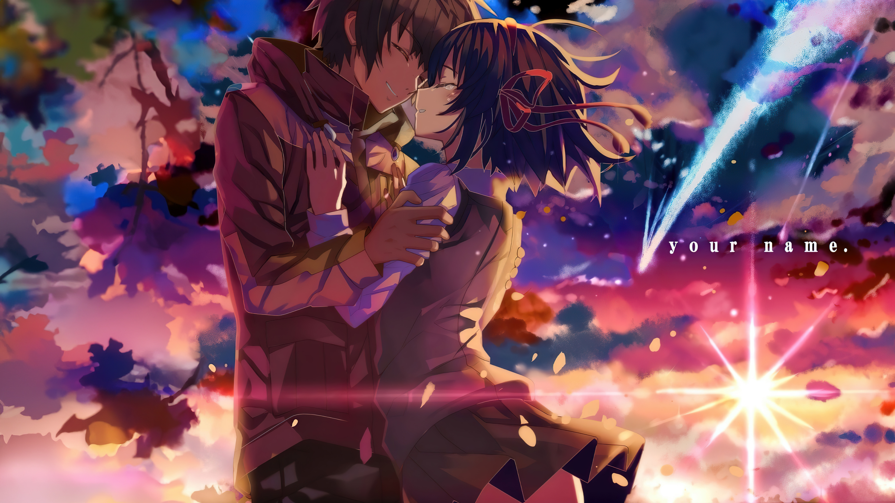

Ação

Romance

Aventura

Suspense

Mitsuha, uma garota do campo, e Taki, um garoto de Tóquio, que trocam de corpo. O filme explora temas como Musubi (conexão/tempo), o cometa Tiamat, e o amor que transcende o tempo e o espaço para salvar vidas


Gachiakuta é uma série de mangá dark fantasy japonesa escrita e ilustrada por Kei Urana, cuja adaptação em anime produzida pelo estúdio Bones se destaca na televisão. A obra utiliza o lixo e o descarte como metáfora para discutir desigualdade social e exclusão, acompanhando a jornada de Rudo em um mundo dividido.
Ver mais


Os animes atuam como uma vitrine da cultura japonesa, integrando tradições, mitologia e costumes cotidianos em narrativas globais. Eles refletem a tensão entre modernidade e tradição, retratando desde cerimônias religiosas e culinária até o folclore e a vida escolar, servindo como uma ferramenta de soft power do Japão.
Ler mais
Direitos Reservados 2026 By Takoku Navara